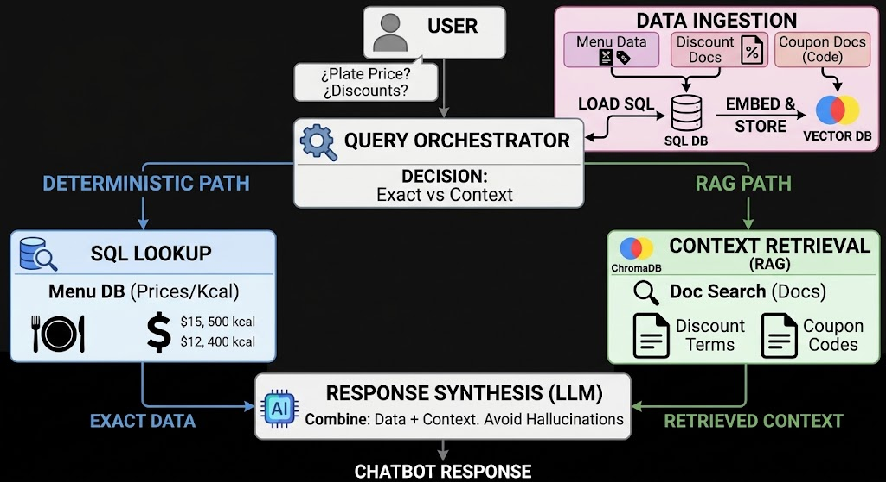
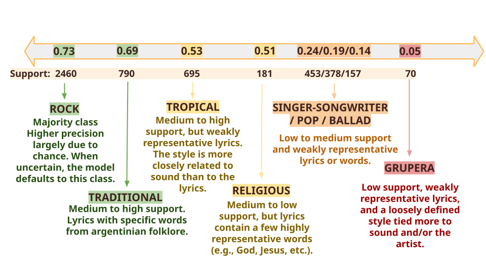
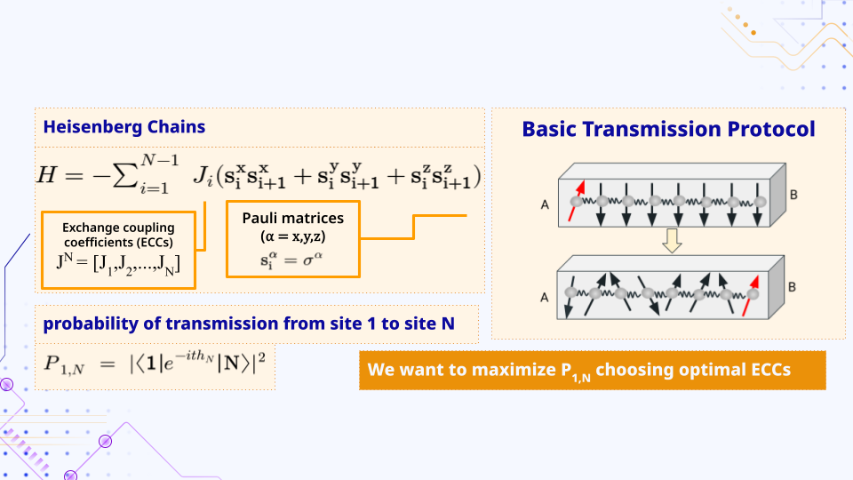
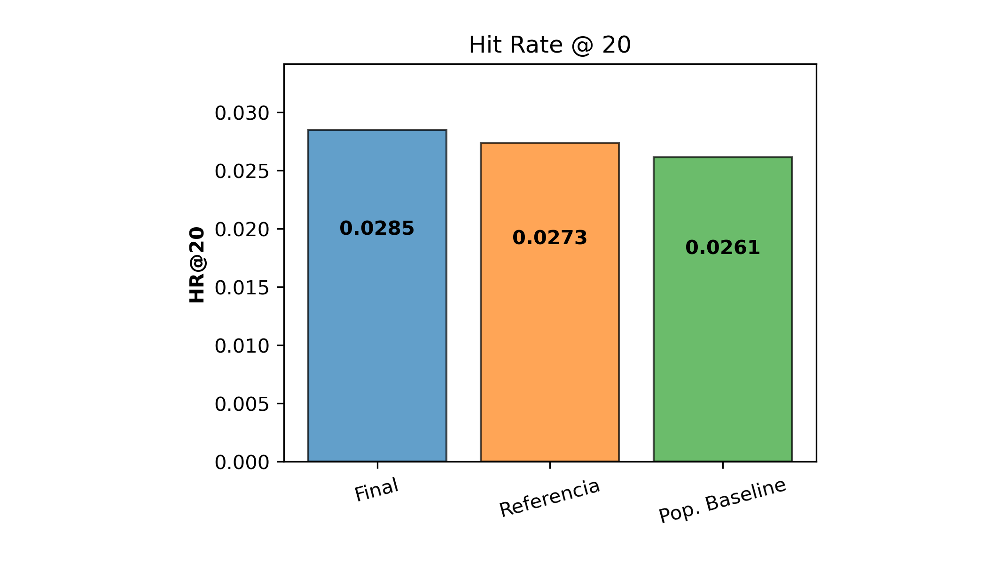

Procesamiento de Lenguaje Natural

Chatbot que responde preguntas sobre el menú de un restaurante combinando búsqueda vectorial (RAG) con lookups determinísticos para datos exactos como precios y calorías, evitando que el LLM invente números.

Proyecto que aplica técnicas de NLP al análisis y clasificación de ~30.000 letras de canciones argentinas para estudiar variaciones semánticas y estilísticas, identificar temáticas, explorar su relación con la popularidad y evaluar distintos modelos.
Machine Learning en Física

Comparación de algoritmos genéticos y deep reinforcement learning para optimizar la transmisión de estados cuánticos mediante pulsos magnéticos.

Continuación del trabajo de control dinámico: cómo se comportan algoritmos genéticos y DQN cuando el control deja de ser perfecto, con optimización de hiperparámetros bajo ruido y entrenamiento con desorden estático.

Optimización de cadenas de espín Heisenberg para lograr alta probabilidad de transmisión de excitaciones cuánticas usando algoritmos genéticos, con análisis de robustez ante desorden estático.

Diseño de circuitos cuánticos variacionales de baja profundidad como clasificadores, comparados contra algoritmos de machine learning clásicos, y exploración de su comportamiento frente al ruido en hardware cuántico real.
Data Science

Proyecto que evalúa Decision Transformers como sistema de recomendación offline de películas, modelando interacciones usuario–ítem como trayectorias de un MDP y comparando su desempeño con métodos tradicionales.
Selección de proyectos desarrollados en la diplomatura: análisis exploratorio, curación de datos, modelado predictivo y visualización.